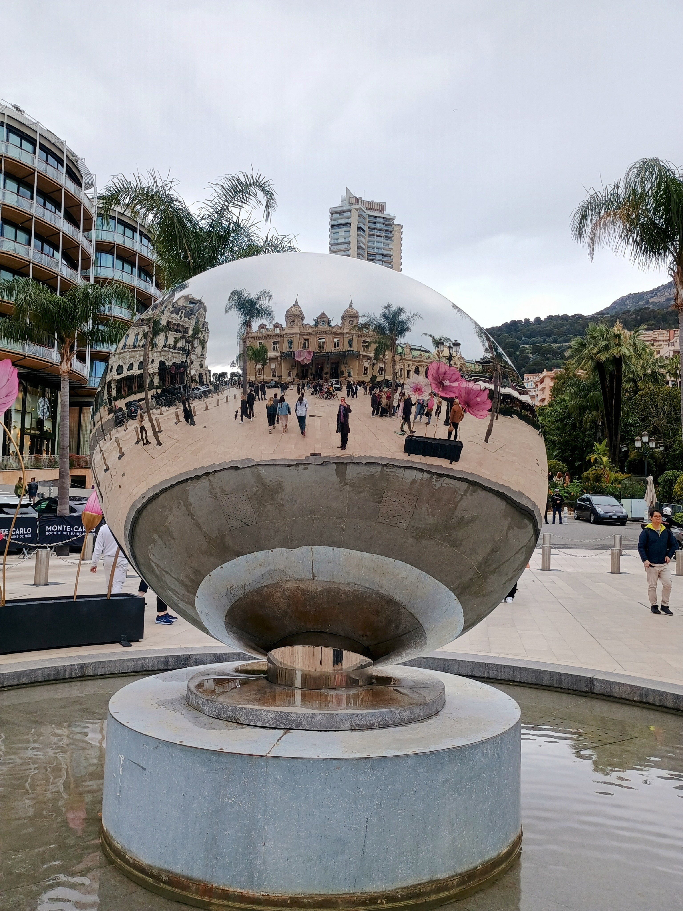

(2025-04-01) Talk at the ECNP New Frontiers Meeting in Nice.

Last week I gave a talk at the European Chapter of Neuropsychopharmacology about my work with Cian O'Donnell, Sydney Dimmock and others on Bayesian approaches to cell count data; the slides are here
doi.org/10.5281/zenodo.15087656
and our paper is here:
The main message of the paper is that Bayesian approaches are very efficient and robust when applied to this class of data; the talk tried to motivate this with a more general discussion of the scientific process and the inferential framework we use. It was an interesting opportunity; the participants were a real mixture, experimentalists, people who do modelling, people from pharmaceutical companies and from companies collecting and curating relevant data. My talk was much more mathematical than most, but the audience were tolerant of that and quiet a few people afterwards seemed keen to use the method.
A bonus was the location, the hotel was on the Promenade des Anglais with horizon-wide view of Mediterranean blue; better still, given that the work depends on Hamiltonian / Hybrid Monte Carlo, I was able to get a train to Monte Carlo for a photograph of the casino; you can see me in the mirror.